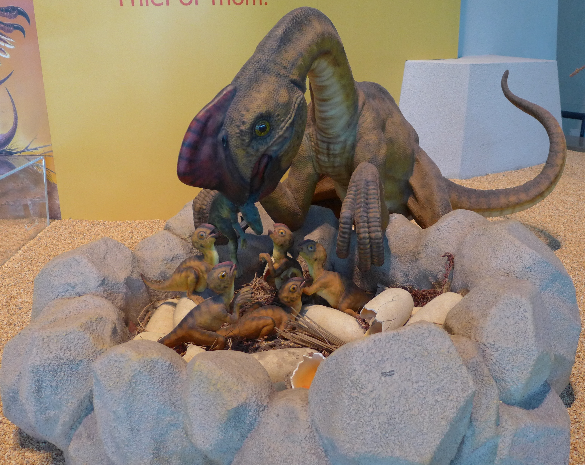

竊蛋龍
屬於腔尾龍類一員的竊蛋龍，是一種善於奔跑的二足小型恐龍。 牠最明顯的特徵是頭部短，而且頭上還有一高聳的骨質頭冠，非常的突出。
此外，竊蛋龍的嘴喙是沒有牙齒，取而代之是強而有力的喙和下顎，作用和現生鸚鵡的喙差不多。 因此古生物學家認為牠應該是以植物嫩葉，以及動物腐屍為主食，也有人認為牠會吃營養的恐龍蛋。 至於牠的前肢有著典型獸足類的利爪，從牠們的化石胃含物中，也常發現一些小型的脊椎動物，因此牠們應該也是肉食性的。
牠們主要分佈在蒙古的戈壁沙漠，生活年代為晚白堊紀。

 竊蛋龍 ─ 是小偷，還是慈祥的母親？
竊蛋龍 ─ 是小偷，還是慈祥的母親？
竊蛋龍最早是由美國自然史博物館於1920年代在中亞地區發掘之旅時所發現，當時其骨骸是在一窩被認為是原角龍蛋的旁邊， 或許是天性吧，人類總會聯想到出現在好東西旁的傢伙，都是不懷好意，因此當時的科學家便認為這種恐龍正要偷取別的恐龍的蛋， 所以就以竊蛋龍命名，並沿用至今。
1993年，美國自然史博物館的古生物學家在另一次中亞洲地區發掘之旅時，發現部份恐龍蛋窩中的蛋有竊蛋龍的胚胎， 因此過去一直認為是原角龍的蛋，其實是屬於竊蛋龍的。
更重要的是發現一隻竊蛋龍蹲伏在一窩蛋上的化石，其姿態和今天的鳥在孵蛋時十分相似。 由於新化石證物的發現，竊蛋龍一夜之間便由小偷成了慈祥的母親！